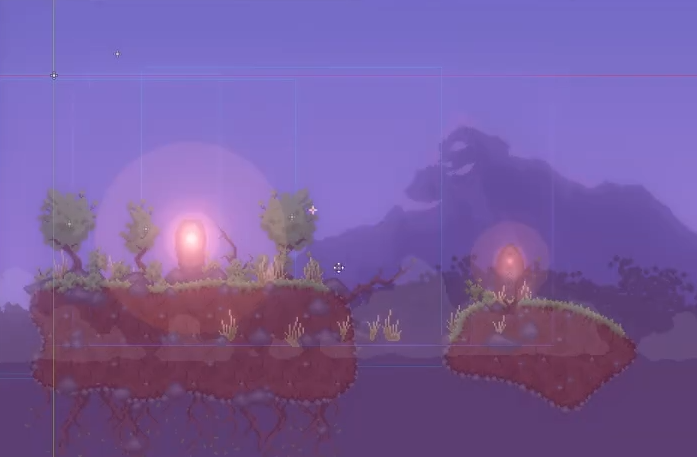

Godot Tiling
https://www.youtube.com/watch?v=2o_IiotMnls
Concepts
A tile map is a 2D composition of smaller reusable images layed out in a grid to form a bigger complex image. The tile set is the set of smaller images used to create the composition. Instead of containing every pixel, a tile map specifies just which tile goes in each position of the grid, which is more efficient and and also more flexible.
Those tiles are of the same size, which matches the grid cell size and shape. Notice that even though, the usual grid is squared, other grid shapes/layouts can be used: isometric, hexagonal...
Instead of populating the tileset by providing individual tile images, we can also provide atlas. An atlas is a image containing a grid of tiles. Because tiles are equally sized, we can specify the tile by the row and column within the atlas.
More complex behavior can be done by layering tile maps. Previous versions of Godot did this layering within the deprecated TileMap. Now the TileMapLayer node just represents one layer and draw order is left to the scene logic: Every children is drawn in top of its parent and on top of its previous sibblings
Define the tile set
- First add a TileMapLayer object to the scene
- Add a TileSet resource and define its tile size and geometry/topology
- Open the bottom docker "TileSet"
- Append the tiles
- They can be individual images or atlas
- The editor has a tool to create a TileAtlas from existing individual Tiles
- Append an atlas
- If you choose an image bigger than the tile it will be considered an atlas
- You have to choose (draw) the tiles you consider active
- Defining an atlas from individual images
- Even if you have the images in individual files it is convenient to use atlas for eficiency.
- Select several images of the tile set
- Click on the vertical 3 dots button
- Choose "Atlas mergin tool"
- Select the tiles and the number of columns to arrange them
- The tileset is a resource so you can save apart and reuse it for different TileMapLayer
- For example, to draw different game levels with the same tiles
Tip
You don't have a tile set to practice? Import the godot icon as atlas. You can pick corners, sides and an inner position to get a nice tiling.
Tip2
You can also draw in inkscape a round bordered square 48x48 (48=16x3)
Draw the tile map
- Select the TileMap node and open the bottom docker "TileMap"
- Free draw (D) (left click), Line (+shift o L) or Rect (+control+shift o R)
- Erase: the same but with right click
- Select (S): Selecciona
- Pick (P): Select the tile or group of tiles from the map
- Fill (R): replace (or erase with Rclick) the clicked tile (contigous unless you untick the option)
- If multiple tiles are selected they are drawn in block
- If you click on the randomization button (dice) you get one of them randomly
- You can define tile probability ('Select' tab in the tile set)
- Tiles can be rotated (Z left, X right) and mirrored (C horizontal, V vertical)
- Patterns: You can select a zone and copy or drag into into the pattern tab, you can use it as a mega-tile (draw, rotate...)
Tile properties and alternatives
Tile properties:
- TileSet -> Tiles -> Select
- Pick an individual tile to see its properties
- Some interesting ones (other explained elsewhere)
- Rendering/Texture origin: Instead of the center, it will rotate at edges
- Rendering/Modulate: A color to modulate the pixels
- Rendering/Material: Interactions with light, shaders...
- Rendering/ZIndex:
- Rendering/YSortOrigin: To overlap tiles (???)
- Rendering/Occlusion: Set the pixels that oclude light
- Miscelaneous/Probability: The chance to pick when random drawing
- Others seen bellow: Animation, Terrain...
- Many properties may be edited in the paint tab, just by choosing a value and 'draw' it over the tiles.
Tile Alternative: Versions of the same base tile but altering properties
- Pick one (base) tile, context menu, "create alternative"
- We can alter the properties of the base
- Besides the regular properties now we have: Flip X, Flip Y, Transpose
- Common usages:
- Generating night version of the tiles with modulation
- Generating tile animation frames with offset
- Generating rotated versions of the tiles
Animated tiles
Animated tiles can be defined by defining frames as contiguous tiles in an atlas. Only the first frame (upper-left) should be activated as tile in the tile set. The others should be deactivated in order to be able to pick them.
To define the animation:
- Tab 'select', and pick the first frame
- Setup the columns of the animation frame set
- Add a frame and the second frame tile will be selected
- Setup the duration of each frame
Tip
The usual procedure is to - load individual images, - integrate them as an Atlas with the merge tool, - define the animation, and - finnally integrate the animation atlas into the tileset one.
Terrain sets
Terrains are used to draw zones of the same material for which the tile to be drawn depends on the terrains of its neighbor tiles. Authoring a tilemap is about drawing the zones for the terrain, and godot will pick the appropiate tile, which is super handy.
How to setup terrains?
- Define the set of terrains as TileSet property.
- In the tileset editor go to the paint tab
- Select the terrain mode, and the terrain you want to define
- First draw on the tiles you want to belong to the terrain
-
Once selected for the terrain the tile will be divided in 9 subtiles:
- The center represents which terrain the tile is
- Each side and corner defines which should be the neighbor to pick the tile
- If no terrain selected, that should be a border
- If other terrain selected that should be a transition
- Godot ponderates which tile to choose
- If several tiles match, it uses the tile probability.
-
Define the terrain as TileMapLayer property
-
In the terrain tab, chose the tiles for the terrai
- For each tile define the 9 neighbours for
- If we have two tiles with the same configuration they are chosen randomly or we can click again to change
Functional layers
You can define them and assign to tiles by drawing, like with terrains.
- Physics Layers: Collision layers and masks (See Physics)
- Occlusion Layers: Light mask for light oclusion
- Navigation Layers: ???
- Custom Data Layers: Custom properties you want to assign to the tiles
- Tile set defines a name and a type
- For every tile we set or "draw" values for the type
Scene tiles
Instead of using an image you can use a scene as a tile. You have all the functionality of scenes replicated as tiles.
Parallax layers
A Parallax background is a good complement to a tile set based scenario. Great effect with small effort.
ParallaxBackground has to be the root of your ParallaxLayer ParallaxLayers do not have images by themselves, you must add Sprite2D as child.
- Sprite / Centering: Uncheck so that the top left corner
- ParallaxLayer / Mirroring, for a continuous
- ParallaxLayer / Scale: Speed factor relative to the camera movement
- One follows the camera movement, 0 is stopped
- Below one will give the impression of distance
- Above one will give the impression that is passed closer to the camera than the main object.
- Since layers are just containers, we can add any kind of node as child.
SmartShape2D
Is an addon that overcomes the limitations of the tile grid.
https://github.com/SirRamEsq/SmartShape2D
- You can create arbitrary shapes with splines
- Those shapes will be filled with a texture that can be big, reducing repetition
- A tool button creates automatically a collision shape for the shape
- You can also define textures for borders
- Those textures will adapt to the slope of the shape border
- Requires at least two edge texture and an inner texture
- You can add severak borders, they will overlap
- You can also specify slope range for each border texture
- Ex. Grass on the top, stones on the bottom.
- Offset: useful to align the border texture.
- You can define sprites to decorate the shape
- This tiles can be placed arbitrarily, not limited to a grid
- They can overlap
- Even though the atlas has a base shape, some sprites can be defined to expan several "tiles"
Process example: https://www.youtube.com/watch?v=r-pd2yuNPvA
- From a small filling texture, and a border, create a decently big shape, snapshot to the bitmap editor, then:
- Take a bigger chunk of the filling and create anomalies to break up symmetries, then take that chunk and set it as the new filling tile.
- Let the chunk on a back layer and draw complementary sprites that integrate properly
- Make all the complements to fit in the grid (can expand more than one tile)
- Tip: make variations on the components but not too unique
- You can use mirroring and rotations when you use them to create more variation
- Arrange all the complements and the fillings inside a grid and save the atlas.
- Back in godot use z index to overlap the components
- Add parallax background to bring several depth levels
- Add translucent parallax foreground to bring even more depth
- Use canvas modulation to unify lighting
- Add emisive sprites out of the modulation
- Add vertex shaders to emulate wind effects on the complements
- Add particles objects to emulate dust, leaves...
